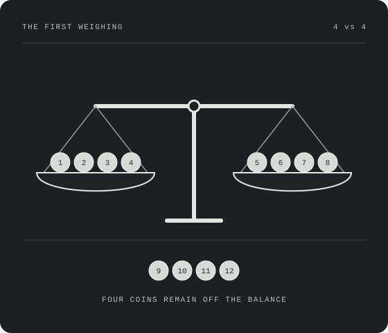

Mathematical notes · Chi-Shan
How far can
a balance take us?
An exploration of counterfeit coins, powers of three, and the value of knowing what is genuine.
Follow the reasoningThere is a classical problem: you are given 12 coins, and among them there exists a counterfeit one which shares the same appearance but is either heavier or lighter than the others. I have made some basic discussion in an earlier post.
In that post, some questions arose in my mind. And I want to record some not-so-correct exploration before distilling it into a rigorous mathematical argument.
The questions
We are faced with $c$ coins, $w$ weighings, and $b$ balances. A round means one simultaneous weighing on all the balances. In a sequential strategy, we may choose the next round after seeing the previous result.
- (P1) What is the minimal number of weighings to decide $c$ coins on one balance?
- (P2) What changes when we are allowed to use $b\geq1$ balances? We may distribute our coins across these balances in one round. This differs from doing $b$ weighings on one balance one after another: within a round, we cannot react to an earlier result.
And decide means: we find that coin and know whether it is heavier or lighter!
There is exactly one counterfeit coin. All genuine coins have the same weight; every balance has the same number of coins on its two pans; a coin can appear on at most one pan per round. We start without an extra genuine coin. Later, a standard coin means a coin that we have already proved genuine.
We observe a four-fold relationship from 3 coins with 2 weighings to 12 coins with 3 weighings. It is incredible. By nature, we can just imagine a double, but here we miraculously “double” the double.
The balanced scenario
How to account for it? I think the easiest part is the “balanced” scenario of round 1. Then we actually know nothing about the rest, which is good for recurrence. And we know something very useful about the coins we just weighed: they are all genuine.
Moreover, inspired by the fact that if we know whether the counterfeit is heavier or lighter, the optimum will be related to powers of 3, we can assume that we have enough standard coins.
Let $RS(w)$ be the largest number of unknown coins we can decide in at most $w$ weighings on one balance, with sufficiently many standard coins available. Here the counterfeit is among the unknown coins, and its direction is initially unknown.
$RS$ means Rest with Standard coins.
Compare $3^{w-1}$ unknown coins against the same number of standard coins. If there is imbalance, then we know its inclination: the counterfeit is in the unknown group, and we know whether it is heavy or light. Split that group into three equal parts, weigh two against each other, and repeat. The remaining $w-1$ weighings suffice.
On the other hand, if it is still balanced, we can recurse on the coins left aside:
$$RS(w)=RS(w-1)+3^{w-1},\qquad RS(1)=1,\quad RS(2)=4.$$
Unrolling the recurrence gives the closed form:
$$\boxed{RS(w)=\sum_{j=0}^{w-1}3^j=\frac{3^w-1}{2}.}$$
For example, with two weighings and three standard coins, weigh three unknown coins against the standards. An imbalance leaves three coins of known inclination, which one more weighing decides. A balance leaves just the fourth unknown coin; compare it against one standard coin to determine its inclination.
This is also an upper bound: there are $2RS(w)$ possible answers and at most $3^w$ outcome strings. Since $2RS(w)$ is even and $3^w$ is odd, $2RS(w)\leq3^w-1$. The construction meets it. We can set $RS(0)=0$ to include the empty base case.
Packing coins together
Going back to the scenario of imbalance in round 1: I am in awe of the construction of 12 coins (I thought of it myself!). So I want to draw on the idea of reduction. What if I pack a certain number of coins together and view them as a whole? I can apply the same strategy to the packs, and finally, with the knowledge of being heavier or lighter, figure out which one in the pack is the real outlier.
Considering that the 12-coin construction with 3 weighings is so ingenious, I make a bold guess: this method is almost the limit. Maybe it is a power-of-3 acceleration: first $4+4+RS(2)$, next $12+12+RS(3)$.
More precisely, for $w\geq3$, put $g=3^{w-3}$. Weigh four packs of $g$ coins against four other packs of $g$ coins, leaving $RS(w-1)$ coins aside.
- Balance: all $8g$ weighed coins become standards. Decide the remaining $RS(w-1)$ coins in $w-1$ more weighings.
- Imbalance: the counterfeit is in one of the eight packs. Continue the imbalance branch of the usual 12-coin strategy, treating a pack as a coin. Two more weighings identify the counterfeit pack and its inclination. The remaining $w-3$ weighings find the outlier among its $g=3^{w-3}$ coins by ternary splitting.
For the second branch, the usual strategy may need the four packs that were left aside. We can form them from the unweighed coins, now known to be genuine, because
$$RS(w-1)-4g=\frac{9g-1}{2}-4g=\frac{g-1}{2}\geq0.$$
Equal-size genuine packs have equal total weight. The bad pack differs by exactly the counterfeit coin’s weight difference, so treating each pack as one coin is legitimate.
Thus the capacity of this particular construction is
$$\begin{aligned}C_{\mathrm{pack}}(w)&=8\cdot3^{w-3}+RS(w-1)\\&=8\cdot3^{w-3}+\frac{3^{w-1}-1}{2}\\&=\boxed{\frac{25\cdot3^{w-3}-1}{2}},\qquad w\geq3.\end{aligned}$$
Do we really have enough standard coins?
We actually miss one thing! I previously assumed that we had quite enough standard coins to deal with the rest in the case of balance in round 1. Do we really have enough? Check it and we will find that the first comparison is already the most demanding one.
After round 1 balances, the supply is $S_0=8\cdot3^{w-3}=8g$. The first step of $RS(w-1)$ needs $3^{w-2}=3g$ standard coins. Therefore
$$S_0-3^{w-2}=5g>0.$$
But I want to check every later step, not just the first. Suppose we stay on the balanced branch until $t$ weighings remain, where $1\leq t\leq w-1$. Every unknown coin previously compared against standards has now become a standard too. The available supply is
$$\begin{aligned}S_t&=8g+\sum_{k=t+1}^{w-1}3^{k-1}\\&=8g+\frac{3^{w-1}-3^t}{2}.\end{aligned}$$
The next comparison requires $D_t=3^{t-1}$ standards. Subtracting gives
$$\boxed{S_t-D_t=\frac{25g-5\cdot3^{t-1}}{2}\geq5g>0.}$$
The inequality follows from $3^{t-1}\leq3^{w-2}=3g$. Standard coins are reusable: weighing them does not consume them. As $t$ decreases, our supply grows and the demand shrinks. If a comparison instead tilts, the inclination is known and equal-third splitting requires no standard coins. So the supply is sufficient along every branch of this construction.
How close is “almost”?
With $b$ balances there are $q=2b+1$ possible outcomes in a round: all balance, or exactly one of the balances tilts in one of two directions. There are not $3^b$ usable outcomes, because only one coin is counterfeit.
Here is the sharper bound when we start without standard coins. Let balance $p$ have $m_p$ coins on each pan in the first round. A specified tilt on that balance leaves $2m_p$ possible answers: one of the coins on the heavier pan is heavy, or one on the lighter pan is light. The remaining rounds give at most $q^{w-1}$ outcomes. By parity,
$$2m_p\leq q^{w-1}-1.$$
Let $n$ coins be left off all balances. If all balances stay level, there are $2n$ possible answers, so likewise $2n\leq q^{w-1}-1$. Adding the first-round allocations gives
$$\begin{aligned}c&=2\sum_{p=1}^{b}m_p+n\\&\leq b(q^{w-1}-1)+\frac{q^{w-1}-1}{2}\\&=\frac{(2b+1)^w-1-2b}{2}.\end{aligned}$$
Thus the bound is non-strict:
$$\boxed{2c\leq(2b+1)^w-1-2b.}$$
For one balance this is $U(w)=(3^w-3)/2$. Comparing it with my pack construction,
$$\boxed{U(w)-C_{\mathrm{pack}}(w)=3^{w-3}-1.}$$
| Weighings $w$ | Rest $RS(w-1)$ | My pack construction | Upper bound $U(w)$ | Gap |
|---|---|---|---|---|
| 3 | 4 | 12 | 12 | 0 |
| 4 | 13 | 37 | 39 | 2 |
| 5 | 40 | 112 | 120 | 8 |
| 6 | 121 | 337 | 363 | 26 |
So the guess is exact at $w=3$, but this particular packing method does not reach the bound for $w>3$. Its ratio to the bound tends to $25/27$, about $92.6\%$. That is a precise meaning of “almost,” and a reason to look for a better construction.
The general bound is attainable by a stronger construction; this is the result behind the game's benchmark (see Halbeisen and Hungerbühler, The general counterfeit coin problem). For the feasible no-spare-coin cases $c\geq3$, the answers to the opening questions are therefore
$$w_{\min}(c,1)=\left\lceil\log_3(2c+3)\right\rceil,\qquad w_{\min}(c,b)=\left\lceil\log_{2b+1}(2c+2b+1)\right\rceil.$$
The argument above proves the upper bound on capacity and the performance of my pack construction. It does not by itself prove the stronger construction's attainability. Also, one or two unknown coins cannot be decided without a standard coin, however many rounds we allow: the identity and inclination cannot both be separated.
A weighing plan as a matrix
When I imagine a weighing strategy, I naturally think: “Which coins go on the left, which go on the right, and what do I do after seeing the result?” But a nonsequential strategy has a special requirement: all the weighings must be fixed in advance. A matrix is a natural way to write down that entire plan.
Let $A=(a_{ij})$ have $w$ rows, one per round, and $c$ columns, one per coin. Its entries come from $\{-b,\ldots,-1,0,1,\ldots,b\}$:
- $a_{ij}=+p$: put coin $j$ on the right pan of balance $p$ in round $i$.
- $a_{ij}=-p$: put it on the left pan of balance $p$.
- $a_{ij}=0$: leave it off the balances in that round.
Encode an outcome in exactly the same way: $+p$ means balance $p$ tilts right, $-p$ means it tilts left, and $0$ means all balances stay level. If coin $j$ is heavy, the outcome vector is its column $v_j$. If it is light, the outcome is $-v_j$.
This is the clever part: writing where a coin goes automatically writes what we would observe if it were the heavy counterfeit. No extra encoding is needed.
Three conditions make the plan work:
- Each balance is physically balanced in coin count. In every row, the number of $+p$ entries equals the number of $-p$ entries, for each $p$. A zero arithmetic row sum alone is insufficient when $b>1$.
- Different coins cannot share a column or opposite columns. For $j\ne k$, require $v_j\ne v_k$ and $v_j\ne-v_k$. Otherwise “coin $j$ is heavy” collides with “coin $k$ is heavy” or “coin $k$ is light.”
- No column is zero. A coin that is never weighed gives the same all-balanced result whether it is heavy or light. Even if elimination identifies that coin, we still cannot decide its inclination.
Conversely, these conditions are sufficient: every one of the $2c$ hypotheses has a distinct outcome vector, and each row is a legal simultaneous weighing. We can decode the observed vector by matching it to exactly one signed column.
So designing a nonsequential strategy becomes a combinatorial problem: construct a matrix satisfying these three conditions. This is a different route from my adaptive recurrence, and a natural place for the next exploration to begin.
From the notes to the table
Now weigh the possibilities.
Twelve coins, one counterfeit. Try your own strategy, or experiment with several balances at once.
Play the coin puzzle